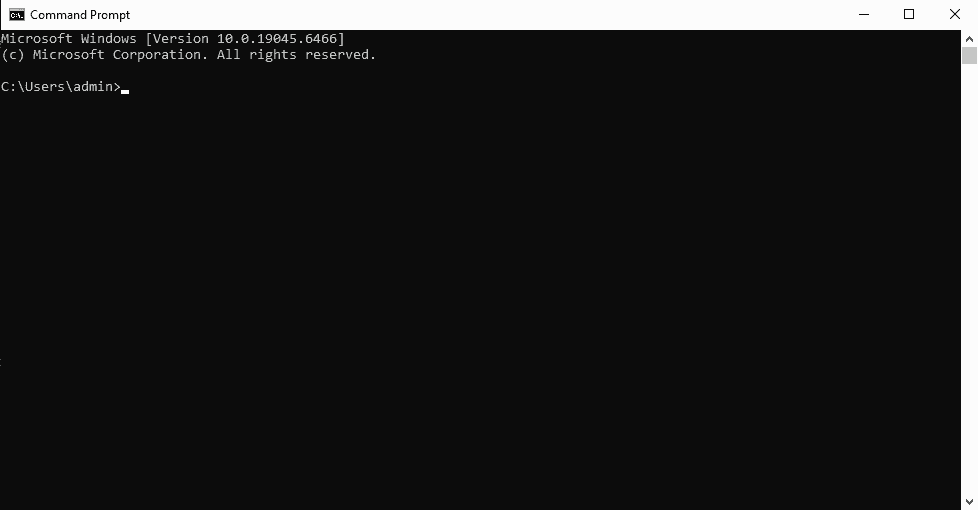
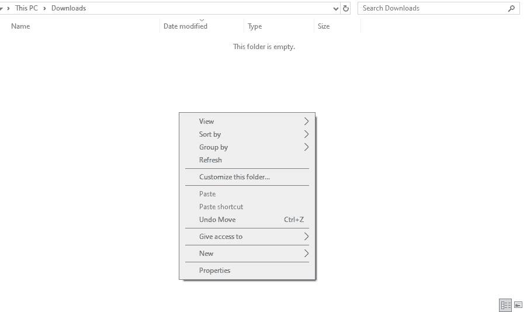
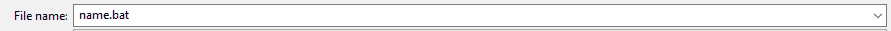
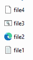

In a computer, the command-line interface (abbreviated as CLI and also known as a "computer-line shell") is a user interface on a computer that users can use by typing to interact with their computer systems...

A CLI is activated when inputs from the user via keyboard called, commands, then a shell interprets the inputs and performs the commands.
When the user submits commands, a shell, then performs tasks like deleting and adding files or changing the current directory. Basically, a shell acts as the translator of the CLI, processing commands and then performing them. One particular example of a shell is, Bash, which is used commonly for Linux and Mac devices, and for Window devices, they use Batch.
Commands in CLI are text from the user that is then later processed and performed by the shell, the commands in the CLI change depending on what operating system the computer is using.
If you are on windows, to create a new Batch file, first open file explorer, next go to a desired directory (I prefer Downloads), then right click to open up the context menu...

Once you have opened the context menu, hover over "New" then click on "Text Document", this will create a new .txt file which you can convert to a .bat file via notepad (Right click on the file < Open With < Notepad < File < Save As... < FILENAME.bat).

Alternatively you can create a command script by instead saving the file as FILENAME.cmd, which will function similarily as a .bat file.
At the beginning of a batch file, the first line is typed as "@ECHO OFF". This command prevents the command-line interface from displaying the commands found within the file itself. And to reverse this, use @ECHO ON later on in the script to see the commands be displayed again in the CLI.
@ECHO OFF
ECHO Hello World
@ECHO ON
ECHO Hello World
PAUSE
ECHO Hello World
Hello World
PAUSE
Press any key to continue . . .
To print a string or variable in Batch, you write "ECHO" on a new line then the variable or string you want to print.
@ECHO OFF
ECHO Hello World
PAUSE
Hello World
Press any key to continue . . .
To print a variable, you type ECHO then the variable's name with percentage signs on both sides...
@ECHO OFF
SET "name=Idkwhyididthissome"
ECHO %name%
PAUSE
Idkwhyididthissome
Press any key to continue . . .
To print the current directory that the CLI is currently on, type out "ECHO %CD%", this will then print out the current directory...
@ECHO OFF
ECHO %CD%
PAUSE
C:\Users\Example
Press any key to continue . . .
Note how "cd" is used with printing and redirecting the current directory as well and that %CD% may print a different directory depending on where you executed the Batch file from.
The PAUSE command halts the batch script and waits for the user to press any key and when keyboard input is given, the script then continues.
@ECHO OFF
ECHO Hello World
PAUSE
Hello World
Press any key to continue . . .
Make sure to use the PAUSE command if you want to see your script's printing (via ECHO), otherwise the script will end right after it executes its last line.
The START command opens up a seperate command prompt window which then runs/executes a program or file. For example, if I wanted to open up notepad I would write "START notepad.exe"...
@ECHO OFF
START notepad.exe
PAUSE
Hello World
Press any key to continue . . .
To declare a variable in a Batch file, first use the SET command, next type out the variable's name, then an equal sign "=", then the variable's value, lastly wrap the whole equation in double quotes...
@ECHO OFF
SET "name=Mount Fuji"
SET "height=12,389"
ECHO Name: %name%
ECHO Height: %height%
PAUSE
Name: Mount Fuji
Press any key to continue . . .
And everytime you need to reference a variable, write its name out with percentage signs on both sides.
The directory in a CLI is the current location or pathway of a file, folder, or a repository, the default directory is a pathway to your user account on your personal device. In windows, the command prompt displays the current directory first as a string of names called components with "\" in between them like "C:\Users\User1\Downloads". You may have seen this in a url to a website for example (except urls use "/" instead of "\"). To change this in a Batch file, use the CD command and type out the next components name. Alternatively you can also retype the entire directory and add the new component at the end...
@ECHO OFF
CD C:\Users\Example
CD C:\Users\Example\Downloads
ECHO %CD%
PAUSE
C:\Users\Example\Downloads
Press any key to continue . . .
@ECHO OFF
CD C:\Users\Example
CD Downloads
ECHO %CD%
PAUSE
C:\Users\Example\Downloads
Press any key to continue . . .
When you change the directory to a folder, then execute the DIR command, the command prompt will list out all files within the folder. Information about the files will also be displayed such as when they were last modified, the file's name, the total amount of files and directories, and how much bytes the folder has used and how many are currently free...
Content (folder)
Location: C:\Users\Example\Downloads
file1.txt
file2.html
file3.bat
file4.css

@ECHO OFF
CD Downloads
CD Content
DIR
PAUSE
Directory of C:\Users\idkwh\Downloads\Content
DATE TIME < DIR > .
DATE TIME < DIR > ..
DATE TIME FILE SIZE file1.txt
DATE TIME FILE SIZE file2.html
DATE TIME FILE SIZE file3.bat
DATE TIME FILE SIZE file4.css
4 File(s) 182
2 Dir(s)79,959,445,504 bytes free
Press any key to continue . . .
Definitions
Command-Line Interface (CLI): A textual interface used to change and manipulate certain properties in computer systems.
Command: Keyboard input typed by the user to be interpreted by the CLI to do something.
Shell: A command-line program that interprets the inputs/commands and performs tasks based on them.